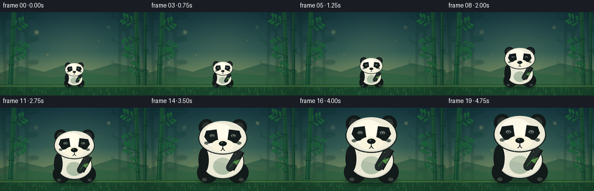
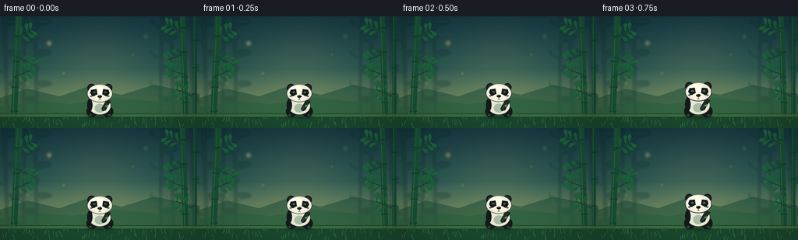

CODING AGENTS AS PIXEL WORLD MODELS
traex/GPT-5.6-Sol · instance_preservation_0045
点击播放 · 原生 RGB 像素
逐轮保存的候选
回放视频、检查图与代码变化。
每份候选均可单独播放。实际图片检查记录在下方工具轨迹中。
候选 01播放与检查图
点击播放 · 原生 RGB 像素


展开代码变化
--- 上一保存版本
+++ 本次保存版本
@@ -0,0 +1,302 @@
+from pathlib import Path
+import math
+import numpy as np
+from PIL import Image, ImageDraw, ImageFilter
+import artifact_io
+
+# Procedural text-to-video renderer for: "A panda changes from small to big."
+# The panda is redrawn from one invariant normalized model at a changing scale,
+# preserving markings, proportions, pose, and ground contact throughout.
+W, H, N = 256, 144, 20
+AA = 4
+SW, SH = W * AA, H * AA
+
+
+def sc(v):
+ return int(round(v * AA))
+
+
+def box(x0, y0, x1, y1):
+ return tuple(sc(v) for v in (x0, y0, x1, y1))
+
+
+def pts(seq):
+ return [(sc(x), sc(y)) for x, y in seq]
+
+
+def ellipse(draw, b, fill, outline=None, width=1):
+ draw.ellipse(box(*b), fill=fill, outline=outline, width=max(1, sc(width)))
+
+
+def make_background(frame_index):
+ """Layered dusk bamboo grove. It stays visually stable as a size reference."""
+ t = frame_index / (N - 1)
+ yy = np.linspace(0, 1, SH, dtype=np.float32)[:, None]
+ top = np.array([21, 56, 65], dtype=np.float32)
+ mid = np.array([57, 104, 91], dtype=np.float32)
+ bot = np.array([151, 154, 92], dtype=np.float32)
+ a = np.clip(yy * 1.45, 0, 1)[..., None]
+ b = np.clip((yy - .48) / .52, 0, 1)[..., None]
+ grad = top[None, None, :] * (1-a) + mid[None, None, :] * a
+ grad = grad * (1-b) + bot[None, None, :] * b
+ grad = np.repeat(grad, SW, axis=1)
+ # faint warm central haze, directing attention to the subject
+ xx = np.linspace(-1, 1, SW, dtype=np.float32)[None, :]
+ haze = np.exp(-((xx / .62) ** 2 + ((yy - .56) / .58) ** 2) * 2.0)[..., None]
+ grad = grad * (1 - .12*haze) + np.array([196, 183, 112])[None, None, :] * (.12*haze)
+ bg = Image.fromarray(np.uint8(np.clip(grad, 0, 255)), 'RGB')
+
+ # Distant soft bamboo silhouettes.
+ far = Image.new('RGBA', (SW, SH), (0, 0, 0, 0))
+ d = ImageDraw.Draw(far)
+ for i, x in enumerate([10, 29, 47, 205, 223, 245]):
+ lean = [-5, 3, -2, 3, -4, 2][i]
+ color = (13, 62, 54, 88)
+ d.line(pts([(x, 145), (x+lean, -5)]), fill=color, width=sc(3 if i % 2 else 4))
+ for k, y in enumerate(range(15, 128, 20)):
+ bx = x + lean * (145-y)/150
+ side = -1 if (k+i) % 2 else 1
+ d.line(pts([(bx, y), (bx+side*13, y-7)]), fill=color, width=sc(1.1))
+ ellipse(d, (bx+side*7-6, y-12, bx+side*16+4, y-5), color)
+ far = far.filter(ImageFilter.GaussianBlur(sc(1.25)))
+ bg = Image.alpha_composite(bg.convert('RGBA'), far)
+
+ # Distant rolling ground / mist.
+ land = Image.new('RGBA', (SW, SH), (0, 0, 0, 0))
+ d = ImageDraw.Draw(land)
+ d.polygon(pts([(0, 105), (35, 93), (76, 103), (111, 91), (156, 101),
+ (198, 88), (256, 100), (256, 144), (0, 144)]), fill=(23, 75, 57, 135))
+ d.polygon(pts([(0, 117), (45, 108), (91, 113), (147, 105), (205, 110),
+ (256, 103), (256, 144), (0, 144)]), fill=(35, 91, 61, 205))
+ bg = Image.alpha_composite(bg, land)
+
+ # Soft bokeh/fireflies, only tiny motion; environmental continuity remains clear.
+ lights = Image.new('RGBA', (SW, SH), (0, 0, 0, 0))
+ d = ImageDraw.Draw(lights)
+ seeds = [(62,35,2.2,.3),(188,26,1.8,1.7),(81,74,1.3,2.4),(215,69,1.5,.8),
+ (35,86,1.1,2.1),(169,49,1.0,1.2),(235,43,.9,2.7)]
+ for i,(x,y,r,p) in enumerate(seeds):
+ glow = .58 + .27*math.sin(2*math.pi*(t*.7+p))
+ xx0 = x + 1.0*math.sin(2*math.pi*(t*.35+p))
+ yy0 = y + .8*math.cos(2*math.pi*(t*.28+p))
+ ellipse(d, (xx0-r*2.4, yy0-r*2.4, xx0+r*2.4, yy0+r*2.4),
+ (255,224,125,int(35*glow)))
+ ellipse(d, (xx0-r, yy0-r, xx0+r, yy0+r), (255,238,158,int(135*glow)))
+ lights = lights.filter(ImageFilter.GaussianBlur(sc(1.5)))
+ bg = Image.alpha_composite(bg, lights)
+
+ # Foreground bamboo columns frame the action, serving as fixed scale cues.
+ fg = Image.new('RGBA', (SW, SH), (0, 0, 0, 0))
+ d = ImageDraw.Draw(fg)
+ sway = math.sin(t*math.pi*2)*0.55
+ def bamboo_stalk(x, width, lean, color, nodes):
+ d.polygon(pts([(x-width/2,145),(x+width/2,145),(x+lean+width/2,-3),(x+lean-width/2,-3)]), fill=color)
+ # slim light edge
+ d.line(pts([(x-width*.20,143),(x+lean-width*.20,-2)]), fill=(76,126,70,125), width=sc(.7))
+ for y in nodes:
+ cx = x + lean*(145-y)/148
+ d.line(pts([(cx-width/2-1,y),(cx+width/2+1,y)]), fill=(13,57,43,210), width=sc(1.35))
+ bamboo_stalk(17, 8, 7, (24,82,55,255), [25,58,91,122])
+ bamboo_stalk(239, 7, -5, (25,78,53,255), [15,46,78,111])
+ bamboo_stalk(250, 5, 0, (18,69,49,230), [31,66,100,130])
+ # Branches and tapered leaf polygons.
+ branches = [
+ (20,28, 41+sway,17, 1),(20,52, 43-sway,62, -1),(18,78, 39+sway,69, 1),
+ (236,21, 214-sway,11,-1),(238,48, 215+sway,56,1),(240,77,219-sway,69,-1),
+ (247,103,226+sway,94,1)
+ ]
+ for x,y,ex,ey,side in branches:
+ d.line(pts([(x,y),(ex,ey)]), fill=(21,70,45,245), width=sc(1.45))
+ ang = math.atan2(ey-y, ex-x)
+ for frac in (.35,.67,.92):
+ bx=x+(ex-x)*frac; by=y+(ey-y)*frac
+ for sgn in (-1,1):
+ la = ang + sgn*(1.02 + .10*side)
+ length = 9.5 if frac < .8 else 8
+ tx=bx+math.cos(la)*length; ty=by+math.sin(la)*length
+ nx=-math.sin(la)*2.4; ny=math.cos(la)*2.4
+ col=(28,91+int(12*frac),57,245)
+ d.polygon(pts([(bx,by),(tx+nx,ty+ny),(tx+math.cos(la)*3,ty+math.sin(la)*3),(tx-nx,ty-ny)]), fill=col)
+ bg = Image.alpha_composite(bg, fg)
+
+ # Ground plane: soft moss and fixed blades.
+ ground = Image.new('RGBA', (SW, SH), (0,0,0,0))
+ d = ImageDraw.Draw(ground)
+ d.rectangle(box(0,125,256,144), fill=(26,72,46,255))
+ d.rectangle(box(0,126,256,129), fill=(69,112,61,180))
+ rng = np.random.default_rng(143)
+ for _ in range(95):
+ x=float(rng.uniform(0,256)); y=float(rng.uniform(127,145)); hh=float(rng.uniform(2,9))
+ col=(35+int(rng.uniform(0,18)), 92+int(rng.uniform(0,30)), 52+int(rng.uniform(0,16)), 220)
+ d.line(pts([(x,y),(x+float(rng.uniform(-2.2,2.2)),y-hh)]), fill=col, width=sc(.65))
+ bg = Image.alpha_composite(bg, ground)
+ return bg
+
+
+def draw_growth_aura(canvas, t, cx, base, S):
+ """Restrained golden rings and motes make the transformation legible."""
+ # Strongest around middle; absent-ish at endpoints.
+ strength = math.sin(math.pi*t) ** 1.45
+ if strength < .02:
+ return
+ glow = Image.new('RGBA', canvas.size, (0,0,0,0))
+ d = ImageDraw.Draw(glow)
+ for j in range(3):
+ phase = (t*1.55 + j/3) % 1.0
+ ry = base - S*(.12 + phase*.77)
+ rx = S*(.29 + .11*phase)
+ alpha = int(60 * strength * math.sin(math.pi*phase))
+ d.ellipse(box(cx-rx, ry-rx*.22, cx+rx, ry+rx*.22), outline=(255,220,115,alpha), width=sc(1.0))
+ for j in range(9):
+ ang=2*math.pi*(j/9 + t*.19)
+ rad=S*(.49 + .045*math.sin(j*2.3+t*4))
+ x=cx+math.cos(ang)*rad
+ y=base-S*.53+math.sin(ang)*S*.48
+ r=.55+((j*7)%4)*.18
+ alpha=int((70+35*math.sin(t*5+j)) * strength)
+ ellipse(d,(x-r,y-r,x+r,y+r),(255,231,140,max(0,alpha)))
+ blur=glow.filter(ImageFilter.GaussianBlur(sc(2.2)))
+ canvas.alpha_composite(blur)
+ canvas.alpha_composite(glow)
+
+
+def draw_panda(canvas, cx, base, S, t):
+ """Draw one consistent seated panda model at scale S."""
+ # Stable contact shadow enlarges with the panda.
+ shadow = Image.new('RGBA', canvas.size, (0,0,0,0))
+ sd = ImageDraw.Draw(shadow)
+ ellipse(sd, (cx-.43*S, base-.065*S, cx+.43*S, base+.035*S), (7,30,26,125))
+ shadow = shadow.filter(ImageFilter.GaussianBlur(sc(max(1.2,S*.035))))
+ canvas.alpha_composite(shadow)
+
+ p = Image.new('RGBA', canvas.size, (0,0,0,0))
+ d = ImageDraw.Draw(p)
+ ink=(18,25,25,255)
+ black=(20,27,27,255)
+ black_hi=(35,43,42,255)
+ fur=(239,236,218,255)
+ fur_hi=(255,252,235,255)
+ fur_shadow=(209,211,195,255)
+
+ # Local helpers.
+ def B(x0,y0,x1,y1):
+ return (cx+x0*S, base+y0*S, cx+x1*S, base+y1*S)
+ def E(coords, fill, outline=None, width=None):
+ ellipse(d,B(*coords),fill,outline,width if width is not None else max(.45,S*.011))
+
+ # Rear legs and seated haunches, then body.
+ E((-.43,-.34,-.08,.015), black, ink, S*.012)
+ E((.08,-.34,.43,.015), black, ink, S*.012)
+ # toe highlights
+ E((-.345,-.075,-.265,-.018),(61,68,64,220))
+ E((.265,-.075,.345,-.018),(61,68,64,220))
+ E((-.355,-.625,.355,-.055), fur_shadow, ink, S*.014)
+ E((-.338,-.635,.338,-.085), fur, None)
+ # gentle belly highlight/shading for volume
+ E((-.245,-.535,.245,-.13),(248,245,226,235))
+ E((-.16,-.41,.16,-.13),(255,253,235,150))
+
+ # Arms preserve exactly the same folded-down pose.
+ # left arm in back, right arm crossing belly
+ E((-.405,-.58,-.235,-.16), black, ink, S*.01)
+ # crossing arm as rounded thick stroke
+ d.line(pts([(cx+.29*S,base-.53*S),(cx+.12*S,base-.23*S)]), fill=ink, width=max(sc(1),sc(S*.155)))
+ d.line(pts([(cx+.28*S,base-.53*S),(cx+.115*S,base-.24*S)]), fill=black_hi, width=max(sc(1),sc(S*.115)))
+ E((.055,-.31,.18,-.18), black_hi)
+
+ # Neck shadow gives separation as the animal grows.
+ E((-.275,-.78,.275,-.52),(146,151,141,125))
+
+ # Ears behind head.
+ E((-.40,-1.055,-.14,-.785), black, ink, S*.013)
+ E((.14,-1.055,.40,-.785), black, ink, S*.013)
+ E((-.346,-1.004,-.19,-.835),(44,51,49,255))
+ E((.19,-1.004,.346,-.835),(44,51,49,255))
+
+ # Head with subtle offset shading and bright face.
+ E((-.405,-1.01,.405,-.465), fur_shadow, ink, S*.015)
+ E((-.383,-1.025,.383,-.493), fur, None)
+ E((-.315,-.988,.19,-.57), fur_hi, None)
+
+ # Eye patches: slanted almond-like ellipses, invariant markings.
+ # use polygons to imply the characteristic oblique patches.
+ left_patch=[(cx-.275*S,base-.862*S),(cx-.105*S,base-.885*S),
+ (cx-.075*S,base-.682*S),(cx-.235*S,base-.65*S),(cx-.31*S,base-.76*S)]
+ right_patch=[(cx+.275*S,base-.862*S),(cx+.105*S,base-.885*S),
+ (cx+.075*S,base-.682*S),(cx+.235*S,base-.65*S),(cx+.31*S,base-.76*S)]
+ d.polygon(pts([(x,y) for x,y in left_patch]),fill=black)
+ d.polygon(pts([(x,y) for x,y in right_patch]),fill=black)
+ # round patch corners visually with small circles
+ E((-.286,-.866,-.105,-.67),black)
+ E((.105,-.866,.286,-.67),black)
+
+ # Calm eyes; a tiny blink near frame 9 adds life without changing identity.
+ blink = math.exp(-((t-.47)/.045)**2)
+ eye_h = max(.009, .050*(1-.88*blink))
+ E((-.217,-.805,-.135,-.805+eye_h),(95,112,104,255))
+ E((.135,-.805,.217,-.805+eye_h),(95,112,104,255))
+ if blink < .78:
+ E((-.193,-.792,-.157,-.758),(16,21,21,255))
+ E((.157,-.792,.193,-.758),(16,21,21,255))
+ E((-.184,-.787,-.171,-.773),(242,248,227,245))
+ E((.171,-.787,.184,-.773),(242,248,227,245))
+
+ # Cream muzzle, nose, smile.
+ E((-.19,-.72,.19,-.515),(251,244,221,255))
+ E((-.066,-.688,.066,-.605),ink)
+ # nose shine
+ E((-.032,-.673,-.002,-.65),(88,96,91,210))
+ lw=max(1,sc(S*.012))
+ d.line(pts([(cx,base-.61*S),(cx,base-.575*S)]),fill=ink,width=lw)
+ d.arc(box(cx-.095*S,base-.622*S,cx,base-.525*S),0,73,fill=ink,width=lw)
+ d.arc(box(cx,base-.622*S,cx+.095*S,base-.525*S),107,180,fill=ink,width=lw)
+ # rosy warmth kept subtle
+ E((-.31,-.68,-.235,-.63),(221,139,124,55))
+ E((.235,-.68,.31,-.63),(221,139,124,55))
+
+ # Signature little jade leaf held against the belly; useful for identity tracking.
+ d.line(pts([(cx+.11*S,base-.25*S),(cx+.22*S,base-.39*S)]),fill=(37,93,52,255),width=max(1,sc(S*.018)))
+ leaf=[(cx+.17*S,base-.34*S),(cx+.29*S,base-.39*S),(cx+.23*S,base-.29*S)]
+ d.polygon(pts(leaf),fill=(79,139,67,255))
+ d.line(pts([(cx+.18*S,base-.335*S),(cx+.275*S,base-.38*S)]),fill=(139,177,91,220),width=max(1,sc(S*.006)))
+
+ # Sparse short fur accents become visible as the panda grows.
+ if S > 55:
+ col=(188,191,178,125)
+ for a in [-.21,-.09,.08,.2]:
+ y=base-(.48 + .025*math.cos(a*20))*S
+ d.line(pts([(cx+a*S,y),(cx+(a+.018)*S,y-.015*S)]),fill=col,width=max(1,sc(.5)))
+
+ canvas.alpha_composite(p)
+
+
+def render_frame(i):
+ t=i/(N-1)
+ # Quintic smoothstep: gentle starts/stops, every interior frame still grows.
+ e=t*t*t*(t*(t*6-15)+10)
+ S=40.0 + 72.0*e
+ cx=128.0
+ base=129.0
+ frame=make_background(i)
+ draw_growth_aura(frame,t,cx,base,S)
+ draw_panda(frame,cx,base,S,t)
+
+ # Fine cinematic vignette, leaving the panda bright.
+ arr=np.asarray(frame.convert('RGB'),dtype=np.float32)
+ yy,xx=np.mgrid[0:SH,0:SW]
+ nx=(xx-SW/2)/(SW/2); ny=(yy-SH*.50)/(SH*.72)
+ vig=np.clip(1-.13*np.maximum(0,nx*nx+ny*ny-.12),.84,1.0)[...,None]
+ arr=np.clip(arr*vig,0,255).astype(np.uint8)
+ im=Image.fromarray(arr,'RGB').resize((W,H),Image.Resampling.LANCZOS)
+ return np.asarray(im,dtype=np.uint8)
+
+
+def main():
+ frames=np.stack([render_frame(i) for i in range(N)],axis=0)
+ assert frames.shape==(N,H,W,3) and frames.dtype==np.uint8
+ artifact_io.save(frames,Path(__file__).resolve().parent)
+ print(f"saved {len(frames)} RGB frames: {frames.shape}, {frames.dtype}")
+
+
+if __name__=='__main__':
+ main()
可观测工具轨迹
实际执行的命令与返回图片。
命令 1exit 0
/bin/bash -lc "cat prompt.txt && printf '\\n---RULES---\\n' && cat GENERATION_RULES.md && printf '\\n---SPEC---\\n' && cat task_spec.json"
命令 2exit 1
/bin/bash -lc "find . -maxdepth 2 -type f -printf '%p\\n' | sort && printf '\\nTOOLS\\n' && command -v ffmpeg && command -v python3 && python3 - <<'PY'
try:
import cv2; print('cv2',cv2.__version__)
except Exception as e: print('no cv2',e)
try:
from PIL import Image; print('PIL ok')
except Exception as e: print('no PIL',e)
PY"命令 3exit 0
/bin/bash -lc 'cat artifact_io.py'
命令 4exit 0
/bin/bash -lc "which ffmpeg || true; which python3 || true; python3 - <<'PY' import sys print(sys.version) for x in ['numpy','PIL','cv2','imageio']: try: m=__import__(x); print(x,'OK',getattr(m,'__version__','')) except Exception as e: print(x,'NO',e) PY"
命令 5exit 0
/bin/bash -lc "cat > generate.py <<'PY'
from pathlib import Path
import math
import numpy as np
from PIL import Image, ImageDraw, ImageFilter
import artifact_io
# Procedural text-to-video renderer for: \"A panda changes from small to big.\"
# The panda is redrawn from one invariant normalized model at a changing scale,
# preserving markings, proportions, pose, and ground contact throughout.
W, H, N = 256, 144, 20
AA = 4
SW, SH = W * AA, H * AA
def sc(v):
return int(round(v * AA))
def box(x0, y0, x1, y1):
return tuple(sc(v) for v in (x0, y0, x1, y1))
def pts(seq):
return [(sc(x), sc(y)) for x, y in seq]
def ellipse(draw, b, fill, outline=None, width=1):
draw.ellipse(box(*b), fill=fill, outline=outline, width=max(1, sc(width)))
def make_background(frame_index):
\"\"\"Layered dusk bamboo grove. It stays visually stable as a size reference.\"\"\"
t = frame_index / (N - 1)
yy = np.linspace(0, 1, SH, dtype=np.float32)[:, None]
top = np.array([21, 56, 65], dtype=np.float32)
mid = np.array([57, 104, 91], dtype=np.float32)
bot = np.array([151, 154, 92], dtype=np.float32)
a = np.clip(yy * 1.45, 0, 1)[..., None]
b = np.clip((yy - .48) / .52, 0, 1)[..., None]
grad = top[None, None, :] * (1-a) + mid[None, None, :] * a
grad = grad * (1-b) + bot[None, None, :] * b
grad = np.repeat(grad, SW, axis=1)
# faint warm central haze, directing attention to the subject
xx = np.linspace(-1, 1, SW, dtype=np.float32)[None, :]
haze = np.exp(-((xx / .62) ** 2 + ((yy - .56) / .58) ** 2) * 2.0)[..., None]
grad = grad * (1 - .12*haze) + np.array([196, 183, 112])[None, None, :] * (.12*haze)
bg = Image.fromarray(np.uint8(np.clip(grad, 0, 255)), 'RGB')
# Distant soft bamboo silhouettes.
far = Image.new('RGBA', (SW, SH), (0, 0, 0, 0))
d = ImageDraw.Draw(far)
for i, x in enumerate([10, 29, 47, 205, 223, 245]):
lean = [-5, 3, -2, 3, -4, 2][i]
color = (13, 62, 54, 88)
d.line(pts([(x, 145), (x+lean, -5)]), fill=color, width=sc(3 if i % 2 else 4))
for k, y in enumerate(range(15, 128, 20)):
bx = x + lean * (145-y)/150
side = -1 if (k+i) % 2 else 1
d.line(pts([(bx, y), (bx+side*13, y-7)]), fill=color, width=sc(1.1))
ellipse(d, (bx+side*7-6, y-12, bx+side*16+4, y-5), color)
far = far.filter(ImageFilter.GaussianBlur(sc(1.25)))
bg = Image.alpha_composite(bg.convert('RGBA'), far)
# Distant rolling ground / mist.
land = Image.new('RGBA', (SW, SH), (0, 0, 0, 0))
d = ImageDraw.Draw(land)
d.polygon(pts([(0, 105), (35, 93), (76, 103), (111, 91), (156, 101),
(198, 88), (256, 100), (256, 144), (0, 144)]), fill=(23, 75, 57, 135))
d.polygon(pts([(0, 117), (45, 108), (91, 113), (147, 105), (205, 110),
(256, 103), (256, 144), (0, 144)]), fill=(35, 91, 61, 205))
bg = Image.alpha_composite(bg, land)
# Soft bokeh/fireflies, only tiny motion; environmental continuity remains clear.
lights = Image.new('RGBA', (SW, SH), (0, 0, 0, 0))
d = ImageDraw.Draw(lights)
seeds = [(62,35,2.2,.3),(188,26,1.8,1.7),(81,74,1.3,2.4),(215,69,1.5,.8),
(35,86,1.1,2.1),(169,49,1.0,1.2),(235,43,.9,2.7)]
for i,(x,y,r,p) in enumerate(seeds):
glow = .58 + .27*math.sin(2*math.pi*(t*.7+p))
xx0 = x + 1.0*math.sin(2*math.pi*(t*.35+p))
yy0 = y + .8*math.cos(2*math.pi*(t*.28+p))
ellipse(d, (xx0-r*2.4, yy0-r*2.4, xx0+r*2.4, yy0+r*2.4),
(255,224,125,int(35*glow)))
ellipse(d, (xx0-r, yy0-r, xx0+r, yy0+r), (255,238,158,int(135*glow)))
lights = lights.filter(ImageFilter.GaussianBlur(sc(1.5)))
bg = Image.alpha_composite(bg, lights)
# Foreground bamboo columns frame the action, serving as fixed scale cues.
fg = Image.new('RGBA', (SW, SH), (0, 0, 0, 0))
d = ImageDraw.Draw(fg)
sway = math.sin(t*math.pi*2)*0.55
def bamboo_stalk(x, width, lean, color, nodes):
d.polygon(pts([(x-width/2,145),(x+width/2,145),(x+lean+width/2,-3),(x+lean-width/2,-3)]), fill=color)
# slim light edge
d.line(pts([(x-width*.20,143),(x+lean-width*.20,-2)]), fill=(76,126,70,125), width=sc(.7))
for y in nodes:
cx = x + lean*(145-y)/148
d.line(pts([(cx-width/2-1,y),(cx+width/2+1,y)]), fill=(13,57,43,210), width=sc(1.35))
bamboo_stalk(17, 8, 7, (24,82,55,255), [25,58,91,122])
bamboo_stalk(239, 7, -5, (25,78,53,255), [15,46,78,111])
bamboo_stalk(250, 5, 0, (18,69,49,230), [31,66,100,130])
# Branches and tapered leaf polygons.
branches = [
(20,28, 41+sway,17, 1),(20,52, 43-sway,62, -1),(18,78, 39+sway,69, 1),
(236,21, 214-sway,11,-1),(238,48, 215+sway,56,1),(240,77,219-sway,69,-1),
(247,103,226+sway,94,1)
]
for x,y,ex,ey,side in branches:
d.line(pts([(x,y),(ex,ey)]), fill=(21,70,45,245), width=sc(1.45))
ang = math.atan2(ey-y, ex-x)
for frac in (.35,.67,.92):
bx=x+(ex-x)*frac; by=y+(ey-y)*frac
for sgn in (-1,1):
la = ang + sgn*(1.02 + .10*side)
length = 9.5 if frac < .8 else 8
tx=bx+math.cos(la)*length; ty=by+math.sin(la)*length
nx=-math.sin(la)*2.4; ny=math.cos(la)*2.4
col=(28,91+int(12*frac),57,245)
d.polygon(pts([(bx,by),(tx+nx,ty+ny),(tx+math.cos(la)*3,ty+math.sin(la)*3),(tx-nx,ty-ny)]), fill=col)
bg = Image.alpha_composite(bg, fg)
# Ground plane: soft moss and fixed blades.
ground = Image.new('RGBA', (SW, SH), (0,0,0,0))
d = ImageDraw.Draw(ground)
d.rectangle(box(0,125,256,144), fill=(26,72,46,255))
d.rectangle(box(0,126,256,129), fill=(69,112,61,180))
rng = np.random.default_rng(143)
for _ in range(95):
x=float(rng.uniform(0,256)); y=float(rng.uniform(127,145)); hh=float(rng.uniform(2,9))
col=(35+int(rng.uniform(0,18)), 92+int(rng.uniform(0,30)), 52+int(rng.uniform(0,16)), 220)
d.line(pts([(x,y),(x+float(rng.uniform(-2.2,2.2)),y-hh)]), fill=col, width=sc(.65))
bg = Image.alpha_composite(bg, ground)
return bg
def draw_growth_aura(canvas, t, cx, base, S):
\"\"\"Restrained golden rings and motes make the transformation legible.\"\"\"
# Strongest around middle; absent-ish at endpoints.
strength = math.sin(math.pi*t) ** 1.45
if strength < .02:
return
glow = Image.new('RGBA', canvas.size, (0,0,0,0))
d = ImageDraw.Draw(glow)
for j in range(3):
phase = (t*1.55 + j/3) % 1.0
ry = base - S*(.12 + phase*.77)
rx = S*(.29 + .11*phase)
alpha = int(60 * strength * math.sin(math.pi*phase))
d.ellipse(box(cx-rx, ry-rx*.22, cx+rx, ry+rx*.22), outline=(255,220,115,alpha), width=sc(1.0))
for j in range(9):
ang=2*math.pi*(j/9 + t*.19)
rad=S*(.49 + .045*math.sin(j*2.3+t*4))
x=cx+math.cos(ang)*rad
y=base-S*.53+math.sin(ang)*S*.48
r=.55+((j*7)%4)*.18
alpha=int((70+35*math.sin(t*5+j)) * strength)
ellipse(d,(x-r,y-r,x+r,y+r),(255,231,140,max(0,alpha)))
blur=glow.filter(ImageFilter.GaussianBlur(sc(2.2)))
canvas.alpha_composite(blur)
canvas.alpha_composite(glow)
def draw_panda(canvas, cx, base, S, t):
\"\"\"Draw one consistent seated panda model at scale S.\"\"\"
# Stable contact shadow enlarges with the panda.
shadow = Image.new('RGBA', canvas.size, (0,0,0,0))
sd = ImageDraw.Draw(shadow)
ellipse(sd, (cx-.43*S, base-.065*S, cx+.43*S, base+.035*S), (7,30,26,125))
shadow = shadow.filter(ImageFilter.GaussianBlur(sc(max(1.2,S*.035))))
canvas.alpha_composite(shadow)
p = Image.new('RGBA', canvas.size, (0,0,0,0))
d = ImageDraw.Draw(p)
ink=(18,25,25,255)
black=(20,27,27,255)
black_hi=(35,43,42,255)
fur=(239,236,218,255)
fur_hi=(255,252,235,255)
fur_shadow=(209,211,195,255)
# Local helpers.
def B(x0,y0,x1,y1):
return (cx+x0*S, base+y0*S, cx+x1*S, base+y1*S)
def E(coords, fill, outline=None, width=None):
ellipse(d,B(*coords),fill,outline,width if width is not None else max(.45,S*.011))
# Rear legs and seated haunches, then body.
E((-.43,-.34,-.08,.015), black, ink, S*.012)
E((.08,-.34,.43,.015), black, ink, S*.012)
# toe highlights
E((-.345,-.075,-.265,-.018),(61,68,64,220))
E((.265,-.075,.345,-.018),(61,68,64,220))
E((-.355,-.625,.355,-.055), fur_shadow, ink, S*.014)
E((-.338,-.635,.338,-.085), fur, None)
# gentle belly highlight/shading for volume
E((-.245,-.535,.245,-.13),(248,245,226,235))
E((-.16,-.41,.16,-.13),(255,253,235,150))
# Arms preserve exactly the same folded-down pose.
# left arm in back, right arm crossing belly
E((-.405,-.58,-.235,-.16), black, ink, S*.01)
# crossing arm as rounded thick stroke
d.line(pts([(cx+.29*S,base-.53*S),(cx+.12*S,base-.23*S)]), fill=ink, width=max(sc(1),sc(S*.155)))
d.line(pts([(cx+.28*S,base-.53*S),(cx+.115*S,base-.24*S)]), fill=black_hi, width=max(sc(1),sc(S*.115)))
E((.055,-.31,.18,-.18), black_hi)
# Neck shadow gives separation as the animal grows.
E((-.275,-.78,.275,-.52),(146,151,141,125))
# Ears behind head.
E((-.40,-1.055,-.14,-.785), black, ink, S*.013)
E((.14,-1.055,.40,-.785), black, ink, S*.013)
E((-.346,-1.004,-.19,-.835),(44,51,49,255))
E((.19,-1.004,.346,-.835),(44,51,49,255))
# Head with subtle offset shading and bright face.
E((-.405,-1.01,.405,-.465), fur_shadow, ink, S*.015)
E((-.383,-1.025,.383,-.493), fur, None)
E((-.315,-.988,.19,-.57), fur_hi, None)
# Eye patches: slanted almond-like ellipses, invariant markings.
# use polygons to imply the characteristic oblique patches.
left_patch=[(cx-.275*S,base-.862*S),(cx-.105*S,base-.885*S),
(cx-.075*S,base-.682*S),(cx-.235*S,base-.65*S),(cx-.31*S,base-.76*S)]
right_patch=[(cx+.275*S,base-.862*S),(cx+.105*S,base-.885*S),
(cx+.075*S,base-.682*S),(cx+.235*S,base-.65*S),(cx+.31*S,base-.76*S)]
d.polygon(pts([(x,y) for x,y in left_patch]),fill=black)
d.polygon(pts([(x,y) for x,y in right_patch]),fill=black)
# round patch corners visually with small circles
E((-.286,-.866,-.105,-.67),black)
E((.105,-.866,.286,-.67),black)
# Calm eyes; a tiny blink near frame 9 adds life without changing identity.
blink = math.exp(-((t-.47)/.045)**2)
eye_h = max(.009, .050*(1-.88*blink))
E((-.217,-.805,-.135,-.805+eye_h),(95,112,104,255))
E((.135,-.805,.217,-.805+eye_h),(95,112,104,255))
if blink < .78:
E((-.193,-.792,-.157,-.758),(16,21,21,255))
E((.157,-.792,.193,-.758),(16,21,21,255))
E((-.184,-.787,-.171,-.773),(242,248,227,245))
E((.171,-.787,.184,-.773),(242,248,227,245))
# Cream muzzle, nose, smile.
E((-.19,-.72,.19,-.515),(251,244,221,255))
E((-.066,-.688,.066,-.605),ink)
# nose shine
E((-.032,-.673,-.002,-.65),(88,96,91,210))
lw=max(1,sc(S*.012))
d.line(pts([(cx,base-.61*S),(cx,base-.575*S)]),fill=ink,width=lw)
d.arc(box(cx-.095*S,base-.622*S,cx,base-.525*S),0,73,fill=ink,width=lw)
d.arc(box(cx,base-.622*S,cx+.095*S,base-.525*S),107,180,fill=ink,width=lw)
# rosy warmth kept subtle
E((-.31,-.68,-.235,-.63),(221,139,124,55))
E((.235,-.68,.31,-.63),(221,139,124,55))
# Signature little jade leaf held against the belly; useful for identity tracking.
d.line(pts([(cx+.11*S,base-.25*S),(cx+.22*S,base-.39*S)]),fill=(37,93,52,255),width=max(1,sc(S*.018)))
leaf=[(cx+.17*S,base-.34*S),(cx+.29*S,base-.39*S),(cx+.23*S,base-.29*S)]
d.polygon(pts(leaf),fill=(79,139,67,255))
d.line(pts([(cx+.18*S,base-.335*S),(cx+.275*S,base-.38*S)]),fill=(139,177,91,220),width=max(1,sc(S*.006)))
# Sparse short fur accents become visible as the panda grows.
if S > 55:
col=(188,191,178,125)
for a in [-.21,-.09,.08,.2]:
y=base-(.48 + .025*math.cos(a*20))*S
d.line(pts([(cx+a*S,y),(cx+(a+.018)*S,y-.015*S)]),fill=col,width=max(1,sc(.5)))
canvas.alpha_composite(p)
def render_frame(i):
t=i/(N-1)
# Quintic smoothstep: gentle starts/stops, every interior frame still grows.
e=t*t*t*(t*(t*6-15)+10)
S=40.0 + 72.0*e
cx=128.0
base=129.0
frame=make_background(i)
draw_growth_aura(frame,t,cx,base,S)
draw_panda(frame,cx,base,S,t)
# Fine cinematic vignette, leaving the panda bright.
arr=np.asarray(frame.convert('RGB'),dtype=np.float32)
yy,xx=np.mgrid[0:SH,0:SW]
nx=(xx-SW/2)/(SW/2); ny=(yy-SH*.50)/(SH*.72)
vig=np.clip(1-.13*np.maximum(0,nx*nx+ny*ny-.12),.84,1.0)[...,None]
arr=np.clip(arr*vig,0,255).astype(np.uint8)
im=Image.fromarray(arr,'RGB').resize((W,H),Image.Resampling.LANCZOS)
return np.asarray(im,dtype=np.uint8)
def main():
frames=np.stack([render_frame(i) for i in range(N)],axis=0)
assert frames.shape==(N,H,W,3) and frames.dtype==np.uint8
artifact_io.save(frames,Path(__file__).resolve().parent)
print(f\"saved {len(frames)} RGB frames: {frames.shape}, {frames.dtype}\")
if __name__=='__main__':
main()
PY
python3 generate.py
ls -lh pixels.npz inspection.png transition_check.png index.html frames/00.png frames/19.png"命令 6exit 0
/bin/bash -lc "python3 - <<'PY'
from PIL import Image
import numpy as np, json
z=np.load('pixels.npz')['pixels']
print('pixels tensor', z.shape, z.dtype)
ims=[]
for i in range(20):
a=np.array(Image.open(f'frames/{i:02d}.png'))
# neutral bright panda fur in central arena
yy,xx=np.mgrid[:144,:256]
mask=(a[:,:,0]>185)&(a[:,:,1]>180)&(a[:,:,2]>170)&(xx>65)&(xx<191)&(yy>5)&(yy<131)
ys,xs=np.where(mask)
print(f'{i:02d}: bright bbox {(xs.min(),ys.min(),xs.max(),ys.max()) if len(xs) else None}, area={len(xs):4d}', end='')
if i: print(f', MAD={np.abs(a.astype(float)-prev).mean():.2f}')
else: print()
prev=a
PY"保存候选 1 份；完成命令 6 次；可验证图片返回 0 张。原始 API 响应与完整日志保留在本地。